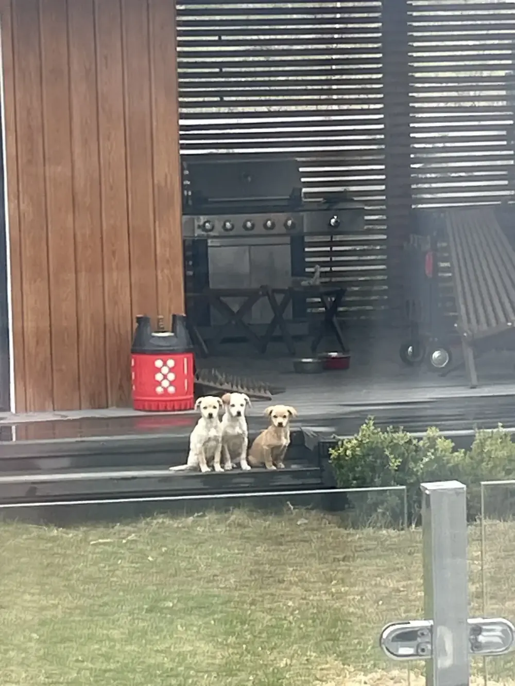
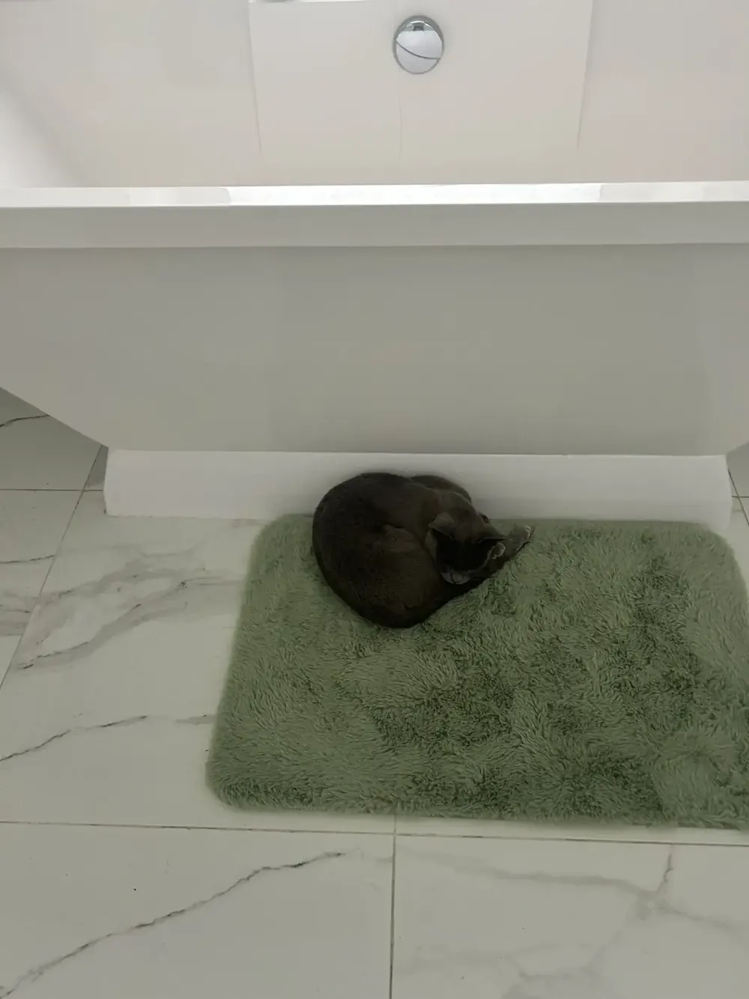
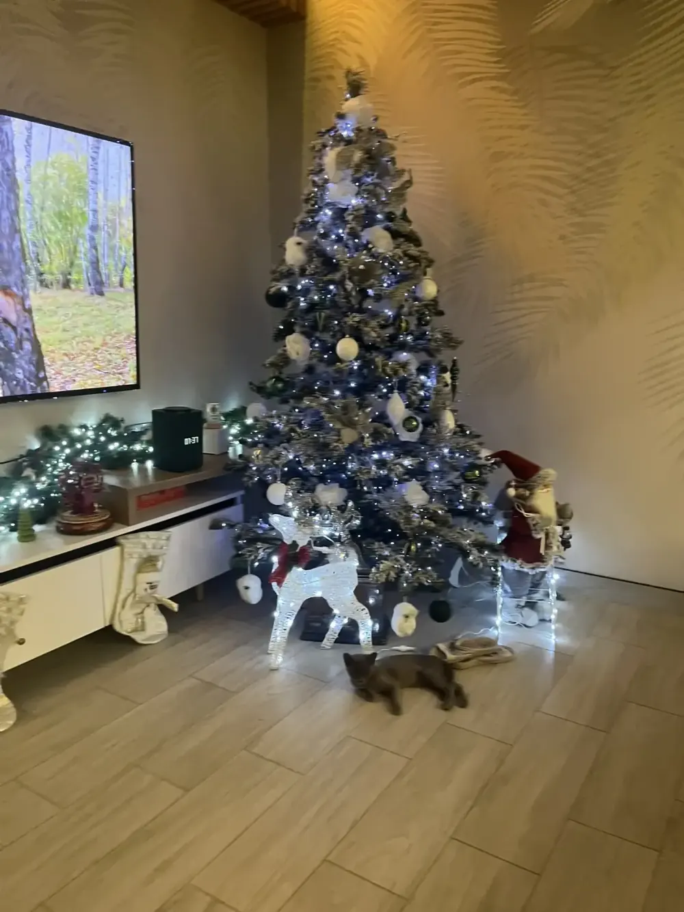
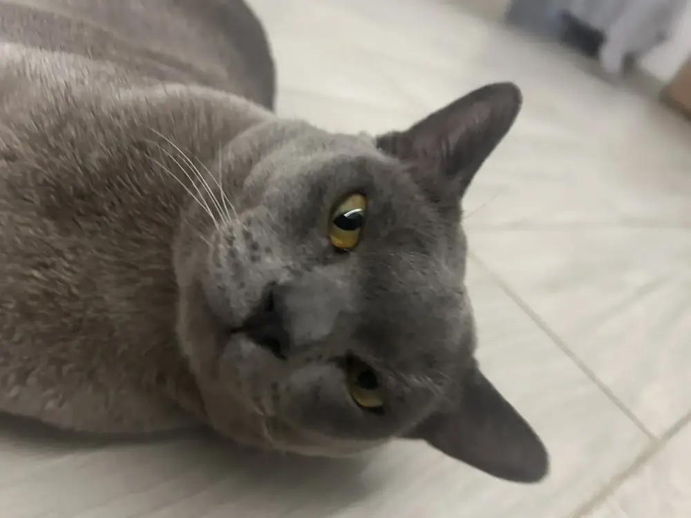
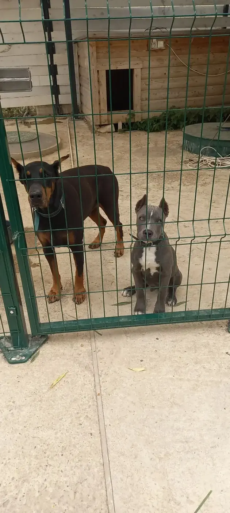
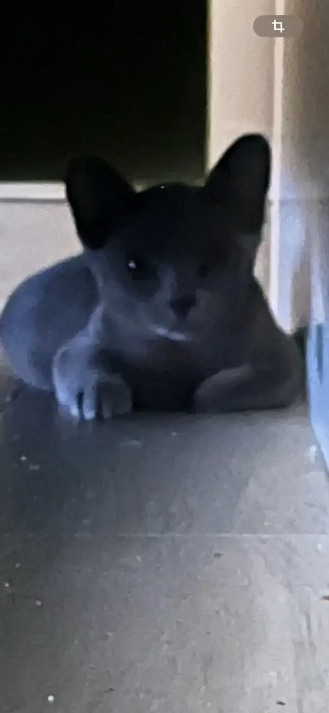
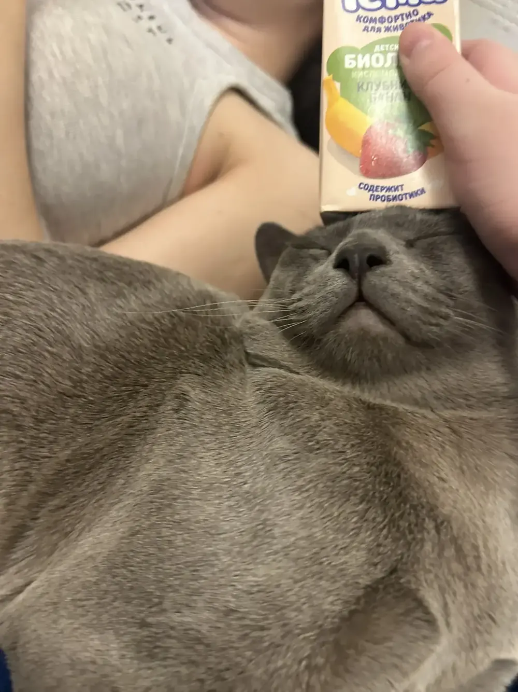

Все дороги
ведут домой.
Воздушный шар унёс пушистую компанию далеко от пикника. Лети через шесть уютных миров, собирай лапки и помоги всем снова устроиться на любимом диване.
Для больших и маленьких пилотов

командана месте!

Дом уже ждёт.
Шесть остановок
до любимого места.
Каждый перелёт — маленькая история. Препятствия смешные, а запас жизней позволяет учиться и не торопиться.
Выбирай пилота.
И — в путь.
Одно касание — один взмах. На компьютере нажимай пробел или ↑. Можно играть с телефона, звук — по желанию.
Пять пилотов.
Один общий дом.
У каждого свой характер и стиль полёта. Выбирай карточку перед стартом — или лети первым, кто готов.
Фотоальбом сделан из фотографий, которые приложены к проекту. Имена и способности персонажей можно настроить в конфиге игры.
Домашние хроники.
Лучшие экспедиции начинаются с обычного дня.





Самое лучшее
место на свете — дома.
«Спасибо, что летели за нами. Мы снова вместе — а теперь можно и поспать».
— вся команда 🐾